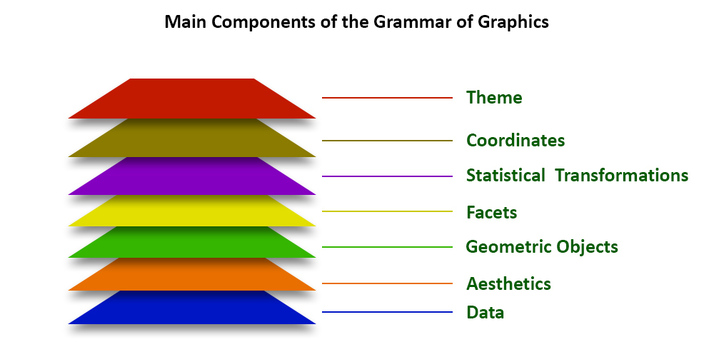
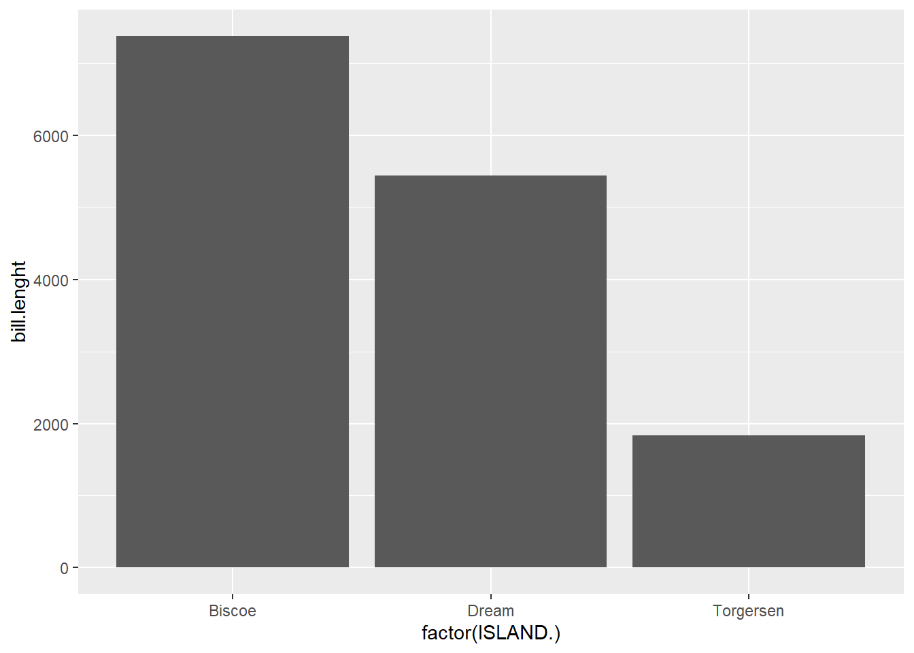

library(tidyverse) # incluye ggplot2
library(readxl) # funciones para importar xlsx
library(janitor) # funciones de limpieza
library(patchwork) #combinar gráficos de ggplot
library(ggExtra)
library(ggthemes) # nuevas temas para los plots
library(plotly) #gráficos interactivos # remotes::install_github("plotly/plotly")
library(tibble)
library(skimr) # reseumen numerico
library(modeest)
library(ggrepel) # añadir etiquetas a los gráficos
library(RColorBrewer) #paletas de colores
library(plotly) #graficos interactivos
library(corrplot)
library(ggridges)3 Librería ggplot
3.1 Cargar librerias
Librerias necesarias que se deben haber instalado previamente con install.packages(nombre del paquete) o en el panel Package.
3.2 Carga de datos
Para cargar los datos debe crear un nuevo archivo script de R y empezar a utilizar lo ssiguientes códigos.
Se utilizará una versión de los datos palmerpinguins, recopilados y puestos a disposición por la Dra. Kristen Gorman y la Estación Palmer, Antártida LTER , miembro de Long Term Ecological Research Network.
datos_pinguinos <- read.csv("data/data_penguins.csv")
head(datos_pinguinos,5) X SPECIES ISLAND. bill.lenght bill.depth flipper.lenght MALE FEMALE
1 1 Adelie Torgersen 39.1 18.7 181 3750 NA
2 2 Adelie Torgersen 39.5 17.4 186 NA 3800
3 3 Adelie Torgersen 40.3 18.0 195 NA 3250
4 4 Adelie Torgersen 36.7 19.3 193 NA 3450
5 5 Adelie Torgersen 39.3 20.6 190 3650 NA3.3 Librería ggplot2
El paquete ggplot2 es una paquete incluido en la librería tidyverse (incluye: ggplot2, dplyr, tidyr, readr, purr,tibble, forcats, lubridate), cuya finalidad es entender los gráficos como parte integrar del procesamiento y modelado de los datos, basándose en la idea de Leland Wilkinson, lgramática de los gráficos. Este concepto permite combinar diferentes elementos en el gráficos como si fueran capas superpuestas para vincularlas a los datos, además de mapear atributos estéticos como , color, forma, tamaño y la visualización de objetos geométricos (puntos, barras, lineas). gplot es la abreviación de Grammar of Graphics plot.
Un gráfico en ggplot se compone de las siguientes capas:
- Datos: conjunto de datos.
- Mapeado de elementos (aesthetics): ejes, color, forma, tamaño, etc (en función de los datos)
- Elementos geométricos (geom): puntos, líneas, barras, polígonos, etc.
- Componer gráficas (facet): visualizar varias gráficas a la vez.
- Transformaciones estadísticas (stat): ordenar, resumir, agrupar, etc.
- Sistema de coordenadas (coord): coordenadas, grids, etc.
- Temas (theme): fuente, tamaño de letra, subtítulos, captions, leyenda, ejes, etc.

3.4 Operador pipe
El operador pipe que simbólicamente se puede utilizar como %>% o |> (versiones recientes) se utiliza para tomar el resultado de unaexpresión y pasarlo a la siguiente expresión, como si estuvieras encajando o uniendo las operaciones una después de la otra. Para utilizar el simbolo del pipe, podemos utilizar las siguientes teclas CTRL+SHIFT+M.
Este componente es parte de los elementos utilizados en la transformación de datos o Data Wrangling y se utilizará en algunos códigos en este contenido.
# Ejemplo 1
# Listar los primeros 10 obs de la tabla
head(datos_pinguinos, 10) X SPECIES ISLAND. bill.lenght bill.depth flipper.lenght MALE FEMALE
1 1 Adelie Torgersen 39.1 18.7 181 3750 NA
2 2 Adelie Torgersen 39.5 17.4 186 NA 3800
3 3 Adelie Torgersen 40.3 18.0 195 NA 3250
4 4 Adelie Torgersen 36.7 19.3 193 NA 3450
5 5 Adelie Torgersen 39.3 20.6 190 3650 NA
6 6 Adelie Torgersen 38.9 17.8 181 NA 3625
7 7 Adelie Torgersen 39.2 19.6 195 4675 NA
8 8 Adelie Torgersen 41.1 17.6 182 NA 3200
9 9 Adelie Torgersen 38.6 21.2 191 3800 NA
10 10 Adelie Torgersen 34.6 21.1 198 4400 NA# Utilizando pipe
# llamamos el tibble de datos
datos_pinguinos |>
head(10) X SPECIES ISLAND. bill.lenght bill.depth flipper.lenght MALE FEMALE
1 1 Adelie Torgersen 39.1 18.7 181 3750 NA
2 2 Adelie Torgersen 39.5 17.4 186 NA 3800
3 3 Adelie Torgersen 40.3 18.0 195 NA 3250
4 4 Adelie Torgersen 36.7 19.3 193 NA 3450
5 5 Adelie Torgersen 39.3 20.6 190 3650 NA
6 6 Adelie Torgersen 38.9 17.8 181 NA 3625
7 7 Adelie Torgersen 39.2 19.6 195 4675 NA
8 8 Adelie Torgersen 41.1 17.6 182 NA 3200
9 9 Adelie Torgersen 38.6 21.2 191 3800 NA
10 10 Adelie Torgersen 34.6 21.1 198 4400 NA# Ejemplo 2
# Resumen de lso datos
summary(datos_pinguinos) X SPECIES ISLAND. bill.lenght
Min. : 1 Length:333 Length:333 Min. :32.10
1st Qu.: 84 Class :character Class :character 1st Qu.:39.50
Median :167 Mode :character Mode :character Median :44.50
Mean :167 Mean :43.99
3rd Qu.:250 3rd Qu.:48.60
Max. :333 Max. :59.60
bill.depth flipper.lenght MALE FEMALE
Min. :13.10 Min. :172 Min. :3250 Min. :2700
1st Qu.:15.60 1st Qu.:190 1st Qu.:3900 1st Qu.:3350
Median :17.30 Median :197 Median :4300 Median :3650
Mean :17.16 Mean :201 Mean :4546 Mean :3862
3rd Qu.:18.70 3rd Qu.:213 3rd Qu.:5312 3rd Qu.:4550
Max. :21.50 Max. :231 Max. :6300 Max. :5200
NA's :165 NA's :168 # Usando pipe
datos_pinguinos |>
summary() X SPECIES ISLAND. bill.lenght
Min. : 1 Length:333 Length:333 Min. :32.10
1st Qu.: 84 Class :character Class :character 1st Qu.:39.50
Median :167 Mode :character Mode :character Median :44.50
Mean :167 Mean :43.99
3rd Qu.:250 3rd Qu.:48.60
Max. :333 Max. :59.60
bill.depth flipper.lenght MALE FEMALE
Min. :13.10 Min. :172 Min. :3250 Min. :2700
1st Qu.:15.60 1st Qu.:190 1st Qu.:3900 1st Qu.:3350
Median :17.30 Median :197 Median :4300 Median :3650
Mean :17.16 Mean :201 Mean :4546 Mean :3862
3rd Qu.:18.70 3rd Qu.:213 3rd Qu.:5312 3rd Qu.:4550
Max. :21.50 Max. :231 Max. :6300 Max. :5200
NA's :165 NA's :168 # Ejemplo 3
# Seleccionar las columnas 3 y 5 del tibble datospinguinos
# donde island es igual a Torgersen
# mostrar priemaras 5 filas
head(datos_pinguinos[datos_pinguinos$ISLAND.=="Torgersen",c(4,5)],5) bill.lenght bill.depth
1 39.1 18.7
2 39.5 17.4
3 40.3 18.0
4 36.7 19.3
5 39.3 20.6# Utilizando pipe
datos_pinguinos |>
filter(ISLAND.=="Torgersen") |>
select(bill.lenght,bill.depth) |>
head(5) bill.lenght bill.depth
1 39.1 18.7
2 39.5 17.4
3 40.3 18.0
4 36.7 19.3
5 39.3 20.63.5 Estructura de ggplot
La estrutura base de ggplot es la siguiente:
3.6 Función ggplot()
Utilizando solo la función ggplot(), se crea un lienzo o espacio de trabajo para la creación de un gráfico.
ggplot()
3.7 Cargar datos en ggplot
data: es el nombre del tabla en formato tibble o dataframe y se utiliza para cargar los datos, en este caso la tabla datos_pinguinos.
ggplot(data=datos_pinguinos)
3.8 Mapeado y estética
mapping: define el mapeo estético de señales proporcionadas por el set de datos, las variables que modifican estas señales deben estar integradas en aes() que integran las escalas, x, y, que representarán cada observación según variables, tambien en este apartado se identifican otras señales como color, size. En este ejemplo utilizaremos solo la varable SPECIES.
Se mostrará en el eje de las X los datos CATEGORICOS de la variable SPECIES.
ggplot(data = datos_pinguinos,
mapping = aes(x=SPECIES))3.9 Geometría
Para poder dibujar el gráfico, ggplot necesita que añadamos una nueva capa de la geometría o tipo de gráfico a utilizar. Para añadir la nueva capa debemos de colocar el signo de + al final de la línea de mapping y luego el tipo de geometría Geometrías ggplot.
En este ejemplo utilizaremos geom_bar(): representa el tipo de geometría de barras que muestra la figura de los gráficos que interperta la agrupación de datos de la variable categórica SPECIES.
ggplot(data = datos_pinguinos,
mapping = aes(x=SPECIES))+
geom_bar()
3.10 Ejemplo de gráficos en ggplot
A manera de ejemplo mostraremos tres tipos de gráficos en ggplot con diferentes geometrías, solo con el objetivo de ver la estructura básica funcionando donde con los mismos datos solo cambio el tipo de geometría geom_. Al avanzar el contenido se mostrará como funciona el paquete ggplot y el funcionamiento de estas geometrias de forma más detallada.
#Ejemplo de gráfico de puntos
ggplot(data = datos_pinguinos,
mapping = aes(x=bill.lenght, y=bill.depth))+
geom_point()# Ejemplo de gráfico de barras una variable
ggplot(data = datos_pinguinos,
mapping = aes(x=SPECIES))+
geom_bar()# Ejemplo de gráfico de barras dos variables
ggplot(data = datos_pinguinos,
mapping = aes(x=factor(ISLAND.), y=bill.lenght))+
geom_col()
3.11 Tipos de datos en ggplot
Para hacer gráficos con ggplot es necesario que el conjunto de datos sea un tipo de datos estructurado de dos dimensiones que permiten diferentes tipos de datos, por lo que son heterogéneos, en este caso , este tipo de estructuras de datos en R, son los dataframes o los tibble.
3.11.1 Objeto tipo dataframe
Los data frame son datos estructurados, lo que comunmente conocemos como tablas. Su mayor características es que los datos que lo conforman pueden ser de diferentes tipos, numéricos (discretos, continuos), caracteres, lógicos, etc. Una de sus limitantes es que al cargar los datos R puede modificarr el nombre de las variables, si contienen espacios en blancos o algunos carateres especiales, colocan puntos a la variable.
# data.frame mtcars muestra todas las filas, se indica con head, mostrar solo 25
head(datos_pinguinos,25) X SPECIES ISLAND. bill.lenght bill.depth flipper.lenght MALE FEMALE
1 1 Adelie Torgersen 39.1 18.7 181 3750 NA
2 2 Adelie Torgersen 39.5 17.4 186 NA 3800
3 3 Adelie Torgersen 40.3 18.0 195 NA 3250
4 4 Adelie Torgersen 36.7 19.3 193 NA 3450
5 5 Adelie Torgersen 39.3 20.6 190 3650 NA
6 6 Adelie Torgersen 38.9 17.8 181 NA 3625
7 7 Adelie Torgersen 39.2 19.6 195 4675 NA
8 8 Adelie Torgersen 41.1 17.6 182 NA 3200
9 9 Adelie Torgersen 38.6 21.2 191 3800 NA
10 10 Adelie Torgersen 34.6 21.1 198 4400 NA
11 11 Adelie Torgersen 36.6 17.8 185 NA 3700
12 12 Adelie Torgersen 38.7 19.0 195 NA 3450
13 13 Adelie Torgersen 42.5 20.7 197 4500 NA
14 14 Adelie Torgersen 34.4 18.4 184 NA 3325
15 15 Adelie Torgersen 46.0 21.5 194 4200 NA
16 16 Adelie Biscoe 37.8 18.3 174 NA 3400
17 17 Adelie Biscoe 37.7 18.7 180 3600 NA
18 18 Adelie Biscoe 35.9 19.2 189 NA 3800
19 19 Adelie Biscoe 38.2 18.1 185 3950 NA
20 20 Adelie Biscoe 38.8 17.2 180 3800 NA
21 21 Adelie Biscoe 35.3 18.9 187 NA 3800
22 22 Adelie Biscoe 40.6 18.6 183 3550 NA
23 23 Adelie Biscoe 40.5 17.9 187 NA 3200
24 24 Adelie Biscoe 37.9 18.6 172 NA 3150
25 25 Adelie Biscoe 40.5 18.9 180 3950 NA# Verificar Objeto tipo data.frame
class(datos_pinguinos)[1] "data.frame"3.11.2 Objeto tipo tibble
Los tibble son un tipo de data frame para una gestión más ágil, eficiente y coherente. Las tablas en formato tibble tienen 4 ventajas principales frente a los data frame:
- Permiten imprimir por consola la tabla con mayor información de las variables, solo imprime por defecto las primeras filas (todas si son 20 o menos, 10 si son más de 20 filas). Puedes imprimir las filas y columnas que quieras con print(nombre de tibble), pero por defecto te aseguras de no saturar la consola.
- Mantiene la integridad de los datos (no cambia los tipos de las variables y hace una carga de datos inteligente, interpretando los tipos de datos y colocandolos encima de cada variable.
- Si accedes a una columna que no existe avisa con un warning.
- No solo no cambiará el tipo de datos sino que no cambiará el nombre de las variables (los data frame transforma los caracteres que no sean letras).
# transformat dataframe a tible
datos_pinguinos <- as_tibble(datos_pinguinos)
# Verificar Objeto tipo tibble
class(datos_pinguinos)[1] "tbl_df" "tbl" "data.frame"# tibble imprime solo las primeras 10
# coloca el tipo de dato sencima del nombre de la variable
head(datos_pinguinos,10)# A tibble: 10 × 8
X SPECIES ISLAND. bill.lenght bill.depth flipper.lenght MALE FEMALE
<int> <chr> <chr> <dbl> <dbl> <int> <int> <int>
1 1 Adelie Torgersen 39.1 18.7 181 3750 NA
2 2 Adelie Torgersen 39.5 17.4 186 NA 3800
3 3 Adelie Torgersen 40.3 18 195 NA 3250
4 4 Adelie Torgersen 36.7 19.3 193 NA 3450
5 5 Adelie Torgersen 39.3 20.6 190 3650 NA
6 6 Adelie Torgersen 38.9 17.8 181 NA 3625
7 7 Adelie Torgersen 39.2 19.6 195 4675 NA
8 8 Adelie Torgersen 41.1 17.6 182 NA 3200
9 9 Adelie Torgersen 38.6 21.2 191 3800 NA
10 10 Adelie Torgersen 34.6 21.1 198 4400 NA3.11.3 Resumen de datos
Existen diversas formas de mostrar la estructura o resumen de datos en R, en este caso los datos datos_pinguinos (dataframe o tibble) con sus tipos de datos según variables es utilizando la función summary() y glipmse(), esto permite identificar anomalías en los nombre de las variables o en el tipo de variables y es un elemento indispensable para conocer los datos y sus tipos.
# Muestra la estructura de los datos y el tipo de datos
datos_pinguinos |>
summary() X SPECIES ISLAND. bill.lenght
Min. : 1 Length:333 Length:333 Min. :32.10
1st Qu.: 84 Class :character Class :character 1st Qu.:39.50
Median :167 Mode :character Mode :character Median :44.50
Mean :167 Mean :43.99
3rd Qu.:250 3rd Qu.:48.60
Max. :333 Max. :59.60
bill.depth flipper.lenght MALE FEMALE
Min. :13.10 Min. :172 Min. :3250 Min. :2700
1st Qu.:15.60 1st Qu.:190 1st Qu.:3900 1st Qu.:3350
Median :17.30 Median :197 Median :4300 Median :3650
Mean :17.16 Mean :201 Mean :4546 Mean :3862
3rd Qu.:18.70 3rd Qu.:213 3rd Qu.:5312 3rd Qu.:4550
Max. :21.50 Max. :231 Max. :6300 Max. :5200
NA's :165 NA's :168 # La función glimpse es otra forma de mostrar los datos
# sobre todo cuando son muchas variables
# Muestra tambien el tipo de dato por variable
# Permite mostrar la estructura de datos de forma más ordenada
datos_pinguinos |>
glimpse()Rows: 333
Columns: 8
$ X <int> 1, 2, 3, 4, 5, 6, 7, 8, 9, 10, 11, 12, 13, 14, 15, 16, …
$ SPECIES <chr> "Adelie", "Adelie", "Adelie", "Adelie", "Adelie", "Adel…
$ ISLAND. <chr> "Torgersen", "Torgersen", "Torgersen", "Torgersen", "To…
$ bill.lenght <dbl> 39.1, 39.5, 40.3, 36.7, 39.3, 38.9, 39.2, 41.1, 38.6, 3…
$ bill.depth <dbl> 18.7, 17.4, 18.0, 19.3, 20.6, 17.8, 19.6, 17.6, 21.2, 2…
$ flipper.lenght <int> 181, 186, 195, 193, 190, 181, 195, 182, 191, 198, 185, …
$ MALE <int> 3750, NA, NA, NA, 3650, NA, 4675, NA, 3800, 4400, NA, N…
$ FEMALE <int> NA, 3800, 3250, 3450, NA, 3625, NA, 3200, NA, NA, 3700,…3.11.4 Limpieza de nombre de variables
Si bien la limpieza de los datos es un elemento importante al visualizar datos, no es un tema que veremos en este curso, sin embargo podemos evaluar si el nombre de las variables no están normalizados, que tengan espacios en blanco, ya que si la estructura de datos es un dataframe, R los carga con um punto (.), además de que algunas están en mayúscula y otra en minúscula. Por otro lado podemos eliminar las columnas irrelevantes como la columna X en el tibble, que no representa ningún dato de interés en la tabla.
# Nombre de las variables
datos_pinguinos |>
names()[1] "X" "SPECIES" "ISLAND." "bill.lenght"
[5] "bill.depth" "flipper.lenght" "MALE" "FEMALE" # limpieza y normalización de nombres de las variables con janitor
datos_pinguinos <- janitor::clean_names(datos_pinguinos)
# eliminar primera columna
datos_pinguinos <- datos_pinguinos[,-1]
datos_pinguinos |>
names()[1] "species" "island" "bill_lenght" "bill_depth"
[5] "flipper_lenght" "male" "female" # Resumen de datos
datos_pinguinos |>
glimpse()Rows: 333
Columns: 7
$ species <chr> "Adelie", "Adelie", "Adelie", "Adelie", "Adelie", "Adel…
$ island <chr> "Torgersen", "Torgersen", "Torgersen", "Torgersen", "To…
$ bill_lenght <dbl> 39.1, 39.5, 40.3, 36.7, 39.3, 38.9, 39.2, 41.1, 38.6, 3…
$ bill_depth <dbl> 18.7, 17.4, 18.0, 19.3, 20.6, 17.8, 19.6, 17.6, 21.2, 2…
$ flipper_lenght <int> 181, 186, 195, 193, 190, 181, 195, 182, 191, 198, 185, …
$ male <int> 3750, NA, NA, NA, 3650, NA, 4675, NA, 3800, 4400, NA, N…
$ female <int> NA, 3800, 3250, 3450, NA, 3625, NA, 3200, NA, NA, 3700,…3.11.5 Transformación de variables
El resumen de datos tambien permite identificar las variables por tipo, en este caso, dos variables han sido identificadas de tipo caracter species, island, pero realmente son variables categoricas. Una representa las especies de pinguinos y la otra la isla donde se realizo la observación, por lo que debe realizarse su transformación a tipo categórico o en este caso de tipo factor, para ello utilizamos as.factor(), para transformar la variable.
#Verifcar si una variable tiene datos cualitaticos repetidos
# lo que indica que puede ser una var categorica
table(datos_pinguinos$species)
Adelie Chinstrap Gentoo
146 68 119 #resultado
# Adelie Chinstrap Gentoo
# 146 68 119
# Transformar variables de tipo caracter a factor
datos_pinguinos$species <- as.factor(datos_pinguinos$species)
datos_pinguinos$island<- as.factor(datos_pinguinos$island)
#verificar variables
datos_pinguinos |>
glimpse()Rows: 333
Columns: 7
$ species <fct> Adelie, Adelie, Adelie, Adelie, Adelie, Adelie, Adelie,…
$ island <fct> Torgersen, Torgersen, Torgersen, Torgersen, Torgersen, …
$ bill_lenght <dbl> 39.1, 39.5, 40.3, 36.7, 39.3, 38.9, 39.2, 41.1, 38.6, 3…
$ bill_depth <dbl> 18.7, 17.4, 18.0, 19.3, 20.6, 17.8, 19.6, 17.6, 21.2, 2…
$ flipper_lenght <int> 181, 186, 195, 193, 190, 181, 195, 182, 191, 198, 185, …
$ male <int> 3750, NA, NA, NA, 3650, NA, 4675, NA, 3800, 4400, NA, N…
$ female <int> NA, 3800, 3250, 3450, NA, 3625, NA, 3200, NA, NA, 3700,…3.11.6 Tidy data
Un elemento importante en los datos que utiliza ggplot, no es solo la estructura de la tabla (tibble o dataframe) ya que es posible generar visualizaciones utilizando cualquiera de las dos estructura de datos, lo que si es relevante es que ggplot solo trabaja con datos tipo tidy o datos ordenados.
La librería dplyr, ggplot2 y todos los demás paquetes de tidyverse están diseñados para funcionar con datos ordenados.
Los datos ordenados es una forma de mostrar los datos basados en tres reglas interrelacionadas:
- Cada variable debe tener su propia columna.
- Cada observación debe tener su propia fila.
- Cada valor debe tener su propia celda.

datos_pinguinos |>
head(10)# A tibble: 10 × 7
species island bill_lenght bill_depth flipper_lenght male female
<fct> <fct> <dbl> <dbl> <int> <int> <int>
1 Adelie Torgersen 39.1 18.7 181 3750 NA
2 Adelie Torgersen 39.5 17.4 186 NA 3800
3 Adelie Torgersen 40.3 18 195 NA 3250
4 Adelie Torgersen 36.7 19.3 193 NA 3450
5 Adelie Torgersen 39.3 20.6 190 3650 NA
6 Adelie Torgersen 38.9 17.8 181 NA 3625
7 Adelie Torgersen 39.2 19.6 195 4675 NA
8 Adelie Torgersen 41.1 17.6 182 NA 3200
9 Adelie Torgersen 38.6 21.2 191 3800 NA
10 Adelie Torgersen 34.6 21.1 198 4400 NAAdicional a estas tres reglas podemos identificar que un conjunto de datos no está ordenado porque:
- Los encabezados de columna son valores, no nombres de variables
- Las variables se almacenan tanto en filas como en columnas.
- Los datos de una supuesta variable están en diferentes columnas.
En el caso del tibble datos_pinguinos se observa que existen dos variables male y female que contienen los valores de la masa corporal de los pinguinos body_mass_g.
Dentro de las reglas de los datos tidy, cada variable debe tener su propia columna, La masa corporal de los pinguinos debiera estar en una sola columan y no separada en las variables male y female, por otro lado, los encabezados de columna son valores, no nombres de variables, las variables male y female debieran estra en una variable del tipo sexo, que corresponde a una categoria.
Esto indica que esta tibble datos_pinguinos no esta ordenado, este tipo de tabla se conoce como data wider o tabla ancha, ya que su crecimiento es a lo ancho de la tabla, por lo que debemos transformar estos datos en formato data larga o data longer, datos que crecen a lo largo de la tabla.Para ellos haremos usos de las funciones pivotes de R, especificamente pivot_longer().
# Transformar a datos tidy
# Para transformar los datos a tidy, se identifican las columnas o variables
# que se desean unir y convertir en una sola variable
# se coloca el nombre de la nueva variable con names_to
# los datos que contenian las variable male y female pasan a otra variable
# a través de values_to.
datos_pinguinos_tidy <- datos_pinguinos |>
pivot_longer(c("male":"female"),
names_to = "sex",
values_to = "body_mass_g")
# numero de observaciones generadas 666
nrow(datos_pinguinos_tidy)[1] 666datos_pinguinos_tidy |>
head(10)# A tibble: 10 × 7
species island bill_lenght bill_depth flipper_lenght sex body_mass_g
<fct> <fct> <dbl> <dbl> <int> <chr> <int>
1 Adelie Torgersen 39.1 18.7 181 male 3750
2 Adelie Torgersen 39.1 18.7 181 female NA
3 Adelie Torgersen 39.5 17.4 186 male NA
4 Adelie Torgersen 39.5 17.4 186 female 3800
5 Adelie Torgersen 40.3 18 195 male NA
6 Adelie Torgersen 40.3 18 195 female 3250
7 Adelie Torgersen 36.7 19.3 193 male NA
8 Adelie Torgersen 36.7 19.3 193 female 3450
9 Adelie Torgersen 39.3 20.6 190 male 3650
10 Adelie Torgersen 39.3 20.6 190 female NAAl mostrar los datos en formato tidy, podemos observar que se realizó el pivote de la tabla y se crearon las nuevas variables sex y body_mass_g, sin embargo, dentro de los datos había valores vacios (NA) en la tabla original que tambien se cargaron en esta tabla ordenada. Para eliminar estos datos debemos realizar nuevamente el proceso de pivoteo e indicarle a pivot_longer() con values_drop_na = TRUE para que elimine los datos vacios.
# transformar a datos tidy eliminados filas vacias
datos_pinguinos <- datos_pinguinos |>
pivot_longer(c("male":"female"),
names_to = "sex",
values_to = "body_mass_g",
values_drop_na = TRUE)
# numero de observaciones generadas 333
nrow(datos_pinguinos)[1] 333# Resumend de datos , donde ya no se muestran los datos NA
datos_pinguinos |>
head(10)# A tibble: 10 × 7
species island bill_lenght bill_depth flipper_lenght sex body_mass_g
<fct> <fct> <dbl> <dbl> <int> <chr> <int>
1 Adelie Torgersen 39.1 18.7 181 male 3750
2 Adelie Torgersen 39.5 17.4 186 female 3800
3 Adelie Torgersen 40.3 18 195 female 3250
4 Adelie Torgersen 36.7 19.3 193 female 3450
5 Adelie Torgersen 39.3 20.6 190 male 3650
6 Adelie Torgersen 38.9 17.8 181 female 3625
7 Adelie Torgersen 39.2 19.6 195 male 4675
8 Adelie Torgersen 41.1 17.6 182 female 3200
9 Adelie Torgersen 38.6 21.2 191 male 3800
10 Adelie Torgersen 34.6 21.1 198 male 4400#transformar la variable sex a factor
datos_pinguinos$sex <- as.factor(datos_pinguinos$sex)
# write.csv(datos_pinguinos, "data/data_penguins_clean.csv")3.11.7 Resumen de datos con función skim()
Otra de las funciones para hacer resumen de datos es la función skim(), donde se muestra el número de observaciones, variables y tipos de datos que contiene la tabla con las modificaciones realizadas, además de otras informaciones de interés, como la distribución de los datos a través de gráficos de histograma.
# Resumen Numérico de la tabla
datos_pinguinos |>
skim()| Name | datos_pinguinos |
| Number of rows | 333 |
| Number of columns | 7 |
| _______________________ | |
| Column type frequency: | |
| factor | 3 |
| numeric | 4 |
| ________________________ | |
| Group variables | None |
Variable type: factor
| skim_variable | n_missing | complete_rate | ordered | n_unique | top_counts |
|---|---|---|---|---|---|
| species | 0 | 1 | FALSE | 3 | Ade: 146, Gen: 119, Chi: 68 |
| island | 0 | 1 | FALSE | 3 | Bis: 163, Dre: 123, Tor: 47 |
| sex | 0 | 1 | FALSE | 2 | mal: 168, fem: 165 |
Variable type: numeric
| skim_variable | n_missing | complete_rate | mean | sd | p0 | p25 | p50 | p75 | p100 | hist |
|---|---|---|---|---|---|---|---|---|---|---|
| bill_lenght | 0 | 1 | 43.99 | 5.47 | 32.1 | 39.5 | 44.5 | 48.6 | 59.6 | ▃▇▇▆▁ |
| bill_depth | 0 | 1 | 17.16 | 1.97 | 13.1 | 15.6 | 17.3 | 18.7 | 21.5 | ▅▆▇▇▂ |
| flipper_lenght | 0 | 1 | 200.97 | 14.02 | 172.0 | 190.0 | 197.0 | 213.0 | 231.0 | ▂▇▃▅▃ |
| body_mass_g | 0 | 1 | 4207.06 | 805.22 | 2700.0 | 3550.0 | 4050.0 | 4775.0 | 6300.0 | ▃▇▅▃▂ |
4 Gráfico de Histograma en R
Un histograma visualiza la distribución y frecuencia datos durante un intervalo continuo o un período de tiempo determinado de una varible numérica. Cada barra en un histograma representa la frecuencia tabulada en cada intervalo tambien llamado bin.
Los histogramas ayudan a dar una estimación de dónde se concentran los valores, cuáles son los extremos y si hay valores inusuales.
Como ejemplo podemos genertar un histograma c utilizando la variable numérica flipper_lenght y la geometría geom_histogram(). En ggplot el número de bins o intervalos predeterminado es de 30.
Este histograma muestra una distribución de los datos entre los valores de 170 a 230 no simétrica y los valores que más se repiten están entre los intervalos 180 a 200.
# Gráfico de histograma
datos_pinguinos |>
ggplot(aes(x= flipper_lenght)) +
geom_histogram()`stat_bin()` using `bins = 30`. Pick better value with `binwidth`.4.1 Modifcar el número de bins
Al modificar el número de intervalos, en este caso menos intervalos, más datos se agrupan en cada intervalo, por lo que el el eje de las y tiende a incrementarse.
# Modificar número de bins
datos_pinguinos |>
ggplot(aes(x= flipper_lenght)) +
geom_histogram(bins = 15)4.2 Modificar color de las líneas
Utilizando nuevamente el intervalo de 30, es un poco complicado poder identifcar los intervalos con claridad, es por ello que modificaremos el color de linea de cada intervalo con la propiedad color =“#ffffff”. El valor entre comilla representa el color hexadecimal del blanco, pero podemos utilizar los nombres de los colores básicos en inglés (red, blue, yellow, black, white, brown, entre otros).
# Modificar el color de las lineas
# Bins predeterminados = 30
datos_pinguinos |>
ggplot(aes(x= flipper_lenght)) +
geom_histogram(color ="#ffffff", bins = 30)4.3 Modificar color de relleno bins
Para modificar el color del relleno de cada intervalo utilizamos la función fill.
Los colores se pueden colocar con el nombre del color o con el código hexadecimal.
Colores como nombre
Colores hexadecimales
# Gráfico de histograma con colores en los bins para identificar
datos_pinguinos |>
ggplot(aes(x= flipper_lenght)) +
geom_histogram(color ="#ffffff" ,
fill = "#EF3C49",
bins = 30)4.4 Añadir datos al gráfico
Para añadir datos del conteo de las observaciones en un histograma, podemos utilizar la función stat_bin(), a esta función se le añade las propiedades label=..count.. , que realiza el conteo por bins, además de la propiedad geom=“text” que indica que la propiedad es de tipo texto.
# Gráfico de histograma con colores en los bins para identificar
datos_pinguinos |>
ggplot(aes(x= flipper_lenght)) +
geom_histogram(color ="#ffffff" ,
fill = "#EF3C49",
bins=30)+
stat_bin(aes(label=..count..),
geom="text")`stat_bin()` using `bins = 30`. Pick better value with `binwidth`.4.5 Ajustar datos en gráfico
Se puede ajustar la posición del texto utilizando las propiedades vjuts (posición vertical) y hjust(posición horizontal) en la función stat_bin() que permiten mover la posición del texto en horizontal y vertical.
# Gráfico de histograma con colores en los bins para identificar
datos_pinguinos |>
ggplot(aes(x= flipper_lenght)) +
geom_histogram(color ="#ffffff" ,
fill = "#EF3C49",
bins=30)+
stat_bin(aes(label=..count..),
vjust=-0.1,
hjust= 0.5,
geom="text")`stat_bin()` using `bins = 30`. Pick better value with `binwidth`.4.6 Datos en gráfico (bins)
Es importante resaltar que el bins=30 es el valor predeterminado en un histograma, si el valor se modifica como en el ejemplo, este valor se debe tambien modificar en la función stat_bin() , sino los datos no coincidiran en el gráfico.
# Gráfico de histograma con bins =15
datos_pinguinos |>
ggplot(aes(x= flipper_lenght)) +
geom_histogram(color ="#ffffff" ,
fill = "#EF3C49",
bins=15)+
stat_bin(aes(label=..count..),
vjust=-0.1,
hjust= 0.5,
geom="text")`stat_bin()` using `bins = 30`. Pick better value with `binwidth`.# Gráfico de histograma con bins =15 en el histograma y en el texto
datos_pinguinos |>
ggplot(aes(x= flipper_lenght)) +
geom_histogram(color ="#ffffff" ,
fill = "#EF3C49",
bins=15)+
stat_bin(aes(label=..count..),
vjust=-0.1,
hjust= 0.5,
geom="text",
bins = 15)4.7 Añadir info al gráfico
Para añadir una línea que intercepte o se dibuje en una posición x del gráfico se utiliza la función geom_vline(). xintercept = posición de intersección de la línea.
color = color de la línea.
size = tamaño de la línea.
Valor y tipo de linea,
linetype = 0 linetype = “blank”
linetype = 1 linetype = “solid”
linetype = 2 linetype = “dashed”
linetype = 3 linetype = “dotted”
linetype = 4 linetype = “dotdash”
linetype = 5 linetype = “longdash”
linetype = 6 linetype = “twodash”
#calculo de la media y la mediana
media <- mean(datos_pinguinos$flipper_lenght)
media[1] 200.967mediana <- median(datos_pinguinos$flipper_lenght)
mediana[1] 197# Gráfico de histograma con colores en los bins para identificar
datos_pinguinos |>
ggplot(aes(x= flipper_lenght)) +
geom_histogram(color ="#ffffff",
fill = "#EF3C49",
bins=30)+
geom_vline(xintercept = mediana, size = 1) +
geom_vline(xintercept = media, size = 1, linetype = "dashed", color="blue") # Asimétrica, tiene sesgo a la Derecha (cola a la derecha)4.8 Histograma y densidad
Podemos añadir un gráfico de densidad (poligono) junto al gráfico de histograma utilizando la función geom_density() en una nueva capa y la estética en el histograma aes(y = ..density..), recordando que para añadir esta nueva geometria, hay que colocar el signo de + al final del cierre del paréntesis de geom_histogram .
# Gráfico de histograma con grafico de densidad
# lwd=1.5 , representa el grosor del borde del
# grafico de densidad
datos_pinguinos |>
ggplot(aes(x= flipper_lenght)) +
geom_histogram(aes(y = ..density..),
color ="#ffffff",
fill = "#EF3C49",
bins=30)+
geom_density(lwd=1.5, colour = "blue") 4.9 Histograma con variable categórica
Es posible utilizar una variable categórica en un histograma, en este caso la variable sex que contiene los valores del sexo de los pinguinos. Esta variable representa una estetica del gráfico, por lo tanto debe incluirse dentro de la propiedad aes() de la geometria geom_histogram() y la utilizaremos para modificar el color de relleno del histograma.
Como la variable sex tiene dos categorias, ggplot genera dos histogramas de diferentes colores, uno por cada categoría.
# Gráfico de histograma con dos variables
datos_pinguinos |>
ggplot(aes(x= flipper_lenght)) +
geom_histogram(aes(fill=sex),
color ="#ffffff",
bins=30)# colores personalizados
# paleta personalizada
colores <- c("#1B9E77", "#D95F02")
datos_pinguinos |>
ggplot(aes(x= flipper_lenght)) +
geom_histogram(aes(fill=sex),
color ="#ffffff",
bins=30)+
scale_fill_manual(values = colores)4.9.1 Añadir datos al histograma
Los códigos para colocar datos al histograma por categoría, es el mismo visto en los ejemplos anteriores donde se muestra texto en el gráfico de histograma..
# Gráfico de histograma dos variables
datos_pinguinos |>
ggplot(aes(x= flipper_lenght)) +
geom_histogram(aes(fill=sex),
color ="#ffffff",
bins=30)+
stat_bin(aes(label=..count..),
vjust=-0.1,
hjust= 0.5,
geom="text")`stat_bin()` using `bins = 30`. Pick better value with `binwidth`.4.9.2 Histograma con transparencia
Podemos utilizar la propiedad alpha (transparencia) en le geometria geom_histograma() con valores de (0 a 1), 1 = 100%.
Para que usar la transparencia.
Cuando creamos este tipo de histogramas la naturaleza de ggplot, es crear los histograma una encima del otro, como si fueran un solo histograma pero separando la distribución de los datos según la variable sex, esto no permite comprar realmente la distribución de los datos de ambos histogramas.
# Gráfico de histograma con dos variables
datos_pinguinos |>
ggplot(aes(x= flipper_lenght)) +
geom_histogram(aes(fill=sex),
color ="#ffffff",
bins=30,
alpha=0.5)4.9.3 Histograma con transparencia (position)
Si utilizamso la propiedad position = “identity” , en la geometria geom_histogram() podemos ver que ahora los histogramas se solapan, ya que uno esta detrás del otro, permitiendo comparar la distribución de los datos.
# Gráfico de histograma con dos variables
datos_pinguinos |>
ggplot(aes(x= flipper_lenght)) +
geom_histogram(aes(fill=sex),
color ="#ffffff",
bins=30,
alpha=0.5,
position ="identity")4.10 Facetas
Las facetas son una forma más ordenada de mostrar los gráficos que muestran varias categorias, para ello debemos utilizar la función facet_grid() con el nombre de la variable. Los simbolos .~ antes de la variable sex le indica a la faceta que debe colocar los gráficos categorizados en columnas, es decir uno al lado del otro.
datos_pinguinos |>
ggplot(aes(x= flipper_lenght)) +
geom_histogram(aes(fill=sex),
color ="#ffffff",
bins=30,
position ="identity")+
facet_grid(.~sex)4.11 Recomendaciones (VIZ)
4.11.1 Recomendación 1
Cuando se utilizan facetas para mostrar distribuciones por grupo, permite comparar las distribuciones por una variable categórica, sin embargo, al separar los datos es importante mirar el eje x donde el rango de distribución del sexo male es mayor, por lo que es recomendable mantener los ejes iguales modificando los valores con la función xlim() colocando los rangos de la distribución xlim(170,240).
datos_pinguinos |>
ggplot(aes(x= flipper_lenght)) +
geom_histogram(aes(fill=sex),
color ="#ffffff",
bins=30,
position ="identity")+
facet_grid(.~sex)+
xlim(170,240)Warning: Removed 4 rows containing missing values or values outside the scale range
(`geom_bar()`).4.11.2 Recomendación 2
Otra opción en el uso de facetas para no modificar el eje x, es usar las facetas en formato de filas.
Para generar las facetas en filas, debemos utilizar los simbolos ~. después de la variable sex le indica a la faceta que debe colocar los gráficos categorizados en filas, uno debajo del otro. Esto permite una mejor comparación de los histogramas con las mismas coordenadas en el eje x.
datos_pinguinos |>
ggplot(aes(x= flipper_lenght)) +
geom_histogram(aes(fill=sex),
color ="#ffffff",
bins=30,
position ="identity")+
facet_grid(sex~.)4.12 Titulos y nombre de ejes
Podemos añadir titulos al gráfico y modificar la etqiueta de los ejes x, y , como el de la leyenda através de la función labs().
datos_pinguinos |>
ggplot(aes(x= flipper_lenght)) +
geom_histogram(aes(fill=sex),
color ="#ffffff",
bins=30,
position ="identity")+
facet_grid(sex~.)+
labs(title = "Distribución de las longuitud de la aleta de los pinguinos por sexo",
subtitle = "Datos de las islas...",
x="Lonuitud",
y="Cantidad",
fill="Sexo")4.13 Práctica
Crear gráfico de histograma utilizando los datos data_penguins_clean.csv que se encuentran en la carpeta data.
Al cargar los datos debe filtralos por la especie de Gentoo. Utilizar facetas basado en la variable sex.
Gráfico de resultado:
datos_pinguinos <- read.csv("data/data_penguins_clean.csv")
datos_pinguinos |>
glimpse()Rows: 333
Columns: 8
$ X <int> 1, 2, 3, 4, 5, 6, 7, 8, 9, 10, 11, 12, 13, 14, 15, 16, …
$ species <chr> "Adelie", "Adelie", "Adelie", "Adelie", "Adelie", "Adel…
$ island <chr> "Torgersen", "Torgersen", "Torgersen", "Torgersen", "To…
$ bill_lenght <dbl> 39.1, 39.5, 40.3, 36.7, 39.3, 38.9, 39.2, 41.1, 38.6, 3…
$ bill_depth <dbl> 18.7, 17.4, 18.0, 19.3, 20.6, 17.8, 19.6, 17.6, 21.2, 2…
$ flipper_lenght <int> 181, 186, 195, 193, 190, 181, 195, 182, 191, 198, 185, …
$ sex <chr> "male", "female", "female", "female", "male", "female",…
$ body_mass_g <int> 3750, 3800, 3250, 3450, 3650, 3625, 4675, 3200, 3800, 4…datos_pinguinos$species <- as.factor(datos_pinguinos$species)
datos_pinguinos$island <- as.factor(datos_pinguinos$island)
datos_pinguinos$sex <- as.factor(datos_pinguinos$sex)
datos_pinguinos |>
filter(species=="Gentoo") |>
ggplot(aes(x= flipper_lenght)) +
geom_histogram(aes(fill=sex),
color ="#ffffff",
bins=30,
position ="identity")+
facet_grid(sex~.)+
labs(title = "Distribución de las longuitud de la aleta de los pinguinos por sexo",
subtitle = "Datos de las islas...",
x="Lonuitud",
y="Cantidad",
fill="Sexo")+
theme(legend.position = "none")5 Gráfico de boxplot
El Diagrama de Caja y bigotes (box and whisker plot en inglés ) es un tipo de gráfico que muestra un resumen de la cantidad de datos en cinco medidas descriptivas, además de intuir su morfología y simetría.
Este tipo de gráficos nos permite identificar valores atípicos y comparar distribuciones de una variable. Además de conocer de una forma cómoda y rápida como el 50% de los valores centrales se distribuyen, para ello utilizamos la geometría geom_boxplot().
Se pueden detectar los siguientes valores en el gráfico:
- Primer cuartil: representa el 25% de los datos.
- Tercer cuartil: representa el 75% de los datos acumulados..
- Mediana o Segundo Cuartil: Divide en dos partes iguales la distribución, acumula el 50% de los datos.
- Rango Intercuartílico (RIC): representa el 50% intermedio de los datos. Muestra la distancia entre el primer cuartil y el tercer cuartil (Q3-Q1).
- Valores mínimo y máximo.
datos_pinguinos |>
ggplot(aes(x= flipper_lenght)) +
geom_boxplot()# valores de un boxplot
summary(datos_pinguinos$flipper_lenght) Min. 1st Qu. Median Mean 3rd Qu. Max.
172 190 197 201 213 231 boxplot.stats(datos_pinguinos$flipper_lenght)$stats
[1] 172 190 197 213 231
$n
[1] 333
$conf
[1] 195.0086 198.9914
$out
integer(0)# REsumen de valores centrales y de variacion
library(summarytools)
Attaching package: 'summarytools'The following object is masked from 'package:tibble':
viewsummarytools::descr(datos_pinguinos$flipper_lenght)Descriptive Statistics
datos_pinguinos$flipper_lenght
N: 333
flipper_lenght
----------------- ----------------
Mean 200.97
Std.Dev 14.02
Min 172.00
Q1 190.00
Median 197.00
Q3 213.00
Max 231.00
MAD 16.31
IQR 23.00
CV 0.07
Skewness 0.36
SE.Skewness 0.13
Kurtosis -0.98
N.Valid 333.00
Pct.Valid 100.00#Mostrar datos de datos con gráficos
# view(dfSummary(datos_pinguinos[,-1]))5.1 Valores atipicos
Son observaciones cuyos valores son muy diferentes a las de otras observaciones del mismo grupo de datos. Los datos atípicos son ocasionados por: errores de procedimiento, acontecimientos extraordinarios, valores extremos, estos valores pueden distorsionar los resultados del análisis de datos.
#demo
library()
#Extarer datos de prueba
valoresA <- datos_pinguinos |>
slice_sample(n=3)
# sumarle 150 a los datos
valoresA$flipper_lenght <- valoresA$flipper_lenght + 80
# unir datos
datos_pinguinos_ <- rbind(datos_pinguinos,valoresA)
#mostrar gráfico
datos_pinguinos |>
ggplot(aes(x= flipper_lenght)) +
geom_boxplot()
boxplot.stats(datos_pinguinos_$flipper_lenght)$stats
[1] 172.0 190.0 197.0 213.5 231.0
$n
[1] 336
$conf
[1] 194.9744 199.0256
$out
[1] 274 265 305# $stats
# [1] 172 190 197 213 231
#194.9744 199.0256
(rango <- 231-172)[1] 59datos_pinguinos |>
glimpse()Rows: 333
Columns: 8
$ X <int> 1, 2, 3, 4, 5, 6, 7, 8, 9, 10, 11, 12, 13, 14, 15, 16, …
$ species <fct> Adelie, Adelie, Adelie, Adelie, Adelie, Adelie, Adelie,…
$ island <fct> Torgersen, Torgersen, Torgersen, Torgersen, Torgersen, …
$ bill_lenght <dbl> 39.1, 39.5, 40.3, 36.7, 39.3, 38.9, 39.2, 41.1, 38.6, 3…
$ bill_depth <dbl> 18.7, 17.4, 18.0, 19.3, 20.6, 17.8, 19.6, 17.6, 21.2, 2…
$ flipper_lenght <int> 181, 186, 195, 193, 190, 181, 195, 182, 191, 198, 185, …
$ sex <fct> male, female, female, female, male, female, male, femal…
$ body_mass_g <int> 3750, 3800, 3250, 3450, 3650, 3625, 4675, 3200, 3800, 4…#desviavion estandar
sd(datos_pinguinos_$flipper_lenght)[1] 15.95727datos_pinguinos$sex <- as.factor(datos_pinguinos$sex)
datos_pinguinos |>
group_by(sex) |>
summarise(media = mean(flipper_lenght),
mediana = median(flipper_lenght))# A tibble: 2 × 3
sex media mediana
<fct> <dbl> <dbl>
1 female 197. 193
2 male 205. 200.datos_pinguinos |>
ggplot(aes(y= sex, x= flipper_lenght)) +
geom_boxplot()5.2 Boxplot vertical
Para girar el gráfico de boxplot en ggplot, solo debemos cambiar la asignación de la varible x= flipper_lenght a y= flipper_lenght en la estética aes().
datos_pinguinos |>
ggplot(aes(y= flipper_lenght)) +
geom_boxplot()5.3 Boxplot con distribución de puntos
Para añadir los puntos de distribución en el gráfico del boxplot debemos hacer dos pasos: 1. Añadir el eje y=0 en el aes()
2. Utrilizar le geometría geom_jitter().
datos_pinguinos |>
ggplot(aes(x= flipper_lenght, y=0)) +
geom_boxplot()+
geom_jitter()5.4 Boxplot con colores
Para modificar la apariencia del gráfico de boxplot, debemos de modificar las propiedades en la geomatría geom_boxplot().
color = color de la línea del boxplot
fill = color de la caja, si utilizamos , fill=“transparente” la caja es trasnparente.
size = grosor de la linea del boxplot.
datos_pinguinos |>
ggplot(aes(x= flipper_lenght, y=0)) +
geom_boxplot(color = "red",
fill = "lightsalmon",
size = 1)+
geom_jitter()5.5 Boxplot con dos variables
Se queremos utilizar dos variables para comparar su distribución, debemos utilizar una variable categórica, en este caso la variable island en el valor de X o Y, en función de si queremos mostrar el boxplot horizontal o verical.
datos_pinguinos |>
ggplot(aes(y= flipper_lenght, x=island)) +
geom_boxplot()+
geom_jitter()5.6 Boxplot con dos variables - colores
Se queremos darle un color diferente a cada boxplot, colocamos en la geoametría del gráfico la propiedad fill=variable categórica, con ello se creará un color para cada boxplot.
datos_pinguinos |>
ggplot(aes(y= flipper_lenght, x=island)) +
geom_boxplot(aes(fill=island))+
geom_jitter()6 Gráfico Ridge
Los diagramas de crestas ridges son diagramas de líneas parcialmente superpuestas que crean la impresión de una cadena montañosa. Pueden resultar muy útiles para visualizar cambios en las distribuciones a lo largo del tiempo o el espacio. Para su creación es necesario utilizar la geometria geom_density_ridges() que se encuentra en la libreria ggridges. A diferencia del diagrama de densidad e histograma, este tipo de gráfico necesita que se identifique los valores de X y Y en la estética aes() de ggplot.
# Gráfico Ridge son color
datos_pinguinos |>
ggplot(aes(x= flipper_lenght,
y=island)) +
geom_density_ridges()Picking joint bandwidth of 3.23# Gráfico Ridge color relleno
datos_pinguinos |>
ggplot(aes(x= flipper_lenght,
y=island)) +
geom_density_ridges(fill="salmon")Picking joint bandwidth of 3.236.1 Gráfico Ridge - color
Para modificar el color del relleno en los gráficos tipo Ridge utilizamos la porpiedad fill y la variable island que indica el númeor de categorias, estas deben estar integradas en la estética aes() de la geoametría geom_density_ridges.
# dos variable en el color de la lineas
datos_pinguinos |>
ggplot(aes(x= flipper_lenght,
y=island)) +
geom_density_ridges(aes(fill=island))Picking joint bandwidth of 3.236.2 Gráfico Ridge - color palette
Podemos modificar el relleno en los gráficos tipo Ridge con colores diferentes a los colores predeterminados utilizando scale_fill_brewer y algún tipo de paleta de colores en ggplot. En otro de los temas veremos el uso de estas paletas de colores.
# colores con paleta de colores 1
datos_pinguinos |>
ggplot(aes(x= flipper_lenght,
y=island)) +
geom_density_ridges(aes(fill=island))+
scale_fill_brewer(palette = "Blues")Picking joint bandwidth of 3.23# colores con paleta de colores 2
datos_pinguinos |>
ggplot(aes(x= flipper_lenght,
y=island)) +
geom_density_ridges(aes(fill=island))+
scale_fill_brewer(palette = "Pastel2")Picking joint bandwidth of 3.23
# colores con paleta de colores 8
datos_pinguinos |>
ggplot(aes(x= flipper_lenght,
y=island,
fill=island)) +
geom_density_ridges()+
scale_fill_brewer(palette = "Spectral")Picking joint bandwidth of 3.23